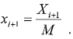

|
Заснований на використанні рекурентного співвідношення:

У якості M вибирається досить велике ціле число, що не перевищує
значення qn, де q – основа системи числення, прийнятої
в комп'ютері; n – кількість цифрових розрядів в машинному слові. Коефіцієнт Λ зазвичай приймається рівним значенню 8Α + 3, де Α – довільне ціле позитивне число. У якості x0 вибирається довільне непарне позитивне число. Мультиплікативний метод дозволяє отримувати псевдовипадкові послідовності, період яких знаходиться в діапазоні від 610 до 910. Для зменшення кореляції чисел формованої послідовності в праву частину рекурентного вираження іноді вводять додатковий доданок: |